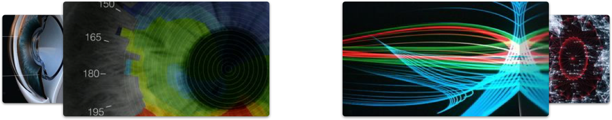

Wavefront solves the problem
of uniquely identifying a person securely in a way that is very hard to fool. Wavefront works specifically to incorporate liveness and captures multi-modal biometric information in one pass. All this in close to real time. Simply, quickly, with low user effort.
See how it works → 